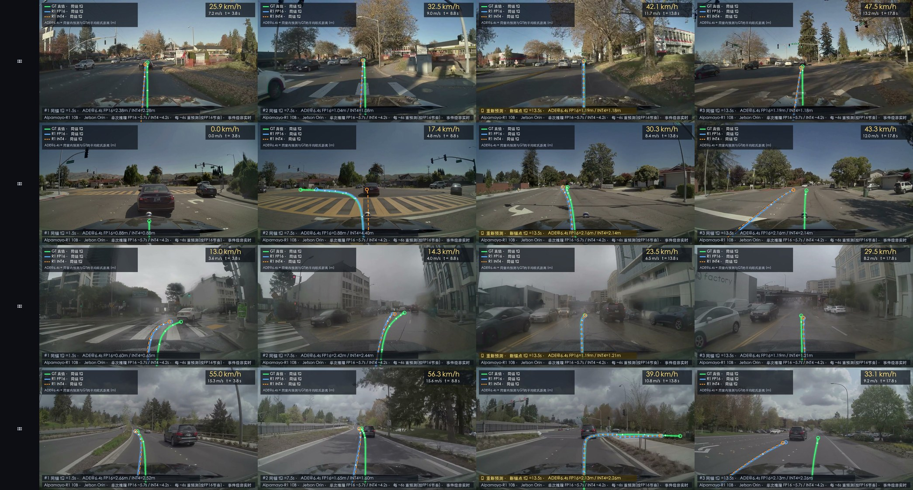

演示
两种形态、同一套叠加口径：GT 真值（绿） 取自数据集 egomotion 标签、R1 FP16 预测（蓝实线） 与 R1 INT4 预测（橙虚线） 均为 Orin 实机推理输出（INT4 = AWQ 量化 backbone、visual/action 仍 FP16），三者都用该片段实测的鱼眼标定投影回前视相机原始帧 ，因此贴合实际路面。先看滚动预测视频 （边前进边每 6s 重预测，4 场景），再看单次预测静态图 （6 个困难转弯片段的精度谱）。
ADE / FDE 误差公式与口径见下方「评测结果」
滚动预测视频（边前进边预测） ：以下 4 段视频里 R1 每 6 秒重新预测一次——这是它在 Orin 上的实测单次推理耗时 （FP16 稳态 ~5.3s，非人为缩短的间隔），每段 3 个锚点（t₀=1.5 / 7.5 / 13.5s）。绿 GT、蓝 R1 FP16、橙虚线 R1 INT4 同锚 t₀ （同窗 [t₀, t₀+6.4]s，重叠=预测精度），随车前进被一起「吃掉」、到下个锚点一起刷新；HUD 常显实时车速与「单次推理 FP16 ~5.7s / INT4 ~4.2s · 事件级非实时」，信息行标注本段 FP16/INT4 的 ADE@6.4s，刷新瞬间黄色高亮。4 段总览见图 1，逐锚点误差与口径见「评测结果」表 2。

图 1 · 滚动预测总览：4 场景（行）× 视频时刻 t=3/8/13/17s（列）；绿=GT 真值、蓝=R1 FP16、橙虚线=R1 INT4（同锚 t₀），t=13s 列为刷新闪烁瞬间；对应视频见图 2–5
图 2 · 片段 0dd3eb7f（直行跟车）滚动预测
场景：直行跟车 3 锚点 · ADE@6.4s 均值 FP16 1.54 / INT4 1.51 m
CoT 原文（每锚点一条，与轨迹同次推理产出）
t₀=1.5s “Keep speed due to the lead vehicle ahead maintaining a steady pace with a stable gap.”
t₀=7.5s “Keep distance to the lead vehicle because it is directly ahead in the same lane.”
t₀=13.5s “Keep distance to the lead vehicle because it is directly ahead in the same lane.”
误差以纵向欠伸为主（低估加速）；t₀=1.5s 锚欠伸 6.4m → 蓝线被车提前吃完、刷新前 ~0.5s 消失（诚实呈现预测误差，非渲染缺陷）。
图 3 · 片段 ecafce84（左转·红灯起停）滚动预测
场景：左转·红灯起停 3 锚点 · ADE@6.4s 均值 FP16 1.31 / INT4 2.47 m
CoT 原文（每锚点一条，与轨迹同次推理产出）
t₀=1.5s “Stay stopped due to the red traffic light”
t₀=7.5s “Accelerate to proceed through the intersection since the straight traffic light turns green.”
t₀=13.5s “Turn right at the intersection since the right-turn traffic light is green.” ⚠️ 文本说右转，轨迹与 GT 实际均左转——文本与动作解耦
红灯停住→加速过口→左转；t₀=1.5s 锚预测「停住」而 GT 已蠕行 5.5m（纵向欠伸）；t₀=7.5s 锚对左转欠估（切弯，终点横差 -3.3m）。
图 4 · 片段 1fcf2fef（右转）滚动预测
场景：右转 3 锚点 · ADE@6.4s 均值 FP16 1.40 / INT4 1.43 m
CoT 原文（每锚点一条，与轨迹同次推理产出）
t₀=1.5s “Turn right at the intersection since the right-turn traffic light is green.”
t₀=7.5s “Adjust speed to keep safe distance from the vehicle ahead”
t₀=13.5s “Nudge left to pass the slowing lead vehicle”
t₀=1.5s 锚 CoT 点出「Turn right」→ ADE 0.60m 近乎贴合（12 锚点最佳）；t₀=7.5s 锚 CoT 退化为跟车 → 欠转，FDE 8.08m 为 12 锚点最大。
图 5 · 片段 1f7ef408（变道）滚动预测
场景：变道 3 锚点 · ADE@6.4s 均值 FP16 2.15 / INT4 2.13 m
CoT 原文（每锚点一条，与轨迹同次推理产出）
t₀=1.5s “Keep distance to the lead vehicle because it is ahead in the same lane.”
t₀=7.5s “Change lanes to the right to merge behind the SUV and then follow it, because the right lane offers a suitable gap and aligns with the intended path toward the upcoming intersection.” ⚠️ 文本说右变道，轨迹与 GT 实际近直行略偏左——文本与动作解耦
t₀=13.5s “Keep distance to the lead vehicle because it is directly ahead in the same lane.”
变道+右转混合；t₀=1.5s 锚高速（v₀=15.2m/s）时序误差放大 → ADE 2.66m 为 12 锚点最大；t₀=13.5s 锚 CoT 退化为跟车 → 欠转（终点横差 +6.8m）。
单次预测静态图（6 个困难转弯片段） ：每张图为一个真实驾驶片段的前视相机原始帧，叠加三条 6.4 秒未来轨迹（GT 真值绿实线 / R1 FP16 蓝实线 / R1 INT4 橙虚线）。卡片标签 「6.4s 终点：前行 X m · 左/右偏 Y m」 是该片段 GT 轨迹在 6.4 秒预测窗末端 、相对自车 t₀ 位置的位移分解 ——前行 X m 为纵向分量、左/右偏 Y m 为横向分量，合起来描述终点落在哪 （一个位移矢量的两个分量），不是 「先直行 X m 再转弯」这类分段机动指令。卡片另标初速 v₀ 与 ADE@6.4s（误差指标的公式与口径见「评测结果」），以及模型同时产出的思维链（CoT）。每张图右上角的序号 1–6 按 ADE@6.4s 从好到差编排，与「评测结果」表 1 逐行对应。
评测结果
测试数据集：NVIDIA PhysicalAI-AV 数据集 dgural 公开 sample 的 6 个 clip——前视广角相机真实帧 + ~100Hz egomotion GT 轨迹；6 个片段均为「6.4s 预测窗内明显转弯」的困难样本（非随机抽样，见下方「口径与诚实边界」）。推理口径：Alpamayo-R1（TRTEdge FP16）Jetson Orin 实机、单噪声种子（seed=5、temperature=0）确定性推理，无训练微调。
下表为 6 个片段上 R1 FP16 与 INT4（AWQ 量化） 预测相对 GT 的逐点欧氏位移误差（ego 系，按 FP16 ADE@6.4s 升序）。核心观察：R1 的思维链与其轨迹精度强相关 ——当 CoT 正确识别出机动（如「绿灯左转」「并入右转道」）时轨迹几乎完美贴合（ADE 低至 0.84m）；当 CoT 退化为泛化的「跟前车」时，模型会漏判或欠判即将到来的转弯（最差例蓝线直冲、绿线左拐，ADE 5.90m）。INT4 与 FP16 逐片段互有高低、整体同量级 （6 片段平均 ADE@6.4s FP16 3.10m / INT4 3.41m），印证「量化近乎免费」。
误差公式 ：ADE@T（平均位移误差）= 预测与 GT 在前 T 秒每个 waypoint 上欧氏距离的均值 = (1/N)·Σᵢ‖predᵢ − gtᵢ‖；FDE@T（终点位移误差）= 第 T 秒末 waypoint 的欧氏距离 = ‖pred_N − gt_N‖。@3s 取前 30 点、@6.4s 取全部 64 点（10 Hz）；均在 t₀ 时刻 ego 系（自车为原点、x 前 y 左）计算，单位米。口径与诚实边界 ：① 单噪声种子（seed=5、temperature=0）确定性推理，非 官方 minADE6（6 采样取最优）；② 6 个片段均为「6.4s 预测窗内明显转弯」的困难样本、非随机抽样，误差天然高于官方全集；③ 数据源 dgural 公开样本的 README 明确声明「不适合 benchmarking / 统计分析」——本页数字仅为逐例行为展示 ，不构成代表性精度结论；④ 官方 Alpamayo-R1 在 644 clip 上报告 minADE6@6.4s≈0.79m，口径不同，不可与本表直接比较。
滚动口径（表 2） ：表 1 回答「困难片段上的单次预测精度」，表 2 回答「滚动设定下的逐锚点精度」——4 个片段（直行跟车 0dd3eb7f / 左转·红灯起停 ecafce84 / 右转 1fcf2fef / 变道 1f7ef408，前视广角真实帧各 ~20s）× 3 锚点（t₀=1.5/7.5/13.5s）= 12 条预测，每 6s 重预测一次（=实测单次推理耗时），同一 Orin 实机、每锚点单样本（temperature=0）、开环 6.4s、无导航输入。列集与表 1 不同：滚动版补「终点纵/横差」与「误差形态」两列，用于定位「几米偏移」的构成；终点差 = pred−gt（t₀ ego 系，纵向 + = 过伸、横向 + = 偏左）。
表 2 · 滚动预测逐锚点误差（Alpamayo-R1 FP16 · Jetson AGX Orin · 单样本 · 开环 6.4s · 按片段分组对应图 2–5）
片段 场景 t₀ (s) v₀ (m/s) ADE@6.4s (m) FDE@6.4s (m) 终点纵差 (m) 终点横差 (m) 误差形态
0dd3eb7f直行跟车 1.5 6.7 2.38 6.43 -6.4 +0.5 纵向欠伸 0dd3eb7f直行跟车 7.5 9.0 1.04 2.05 -2.0 +0.3 基本贴合 0dd3eb7f直行跟车 13.5 11.7 1.19 4.35 -4.3 +0.3 纵向欠伸 ecafce84左转·红灯起停 1.5 0.0 0.88 5.65 -5.6 +0.0 纵向欠伸 ecafce84左转·红灯起停 7.5 3.5 0.88 4.73 +3.3 -3.3 欠转（切弯） ecafce84左转·红灯起停 13.5 8.2 2.16 3.06 -2.0 +2.3 小幅偏差 1fcf2fef右转 1.5 3.6 0.60 1.08 +0.4 +1.0 小幅偏差 1fcf2fef右转 7.5 3.4 2.42 8.08 -4.1 +6.9 欠转（切弯） 1fcf2fef右转 13.5 6.7 1.19 2.99 -3.0 -0.2 基本贴合 1f7ef408变道 1.5 15.2 2.66 3.59 +2.7 +2.4 小幅偏差 1f7ef408变道 7.5 15.6 1.65 3.17 -2.8 +1.5 基本贴合 1f7ef408变道 13.5 11.4 2.13 8.05 +4.3 +6.8 欠转（切弯）
滚动口径与发现 ：① 每锚点单样本——官方 minADE 为 6-seed 采样取最小，且 seed 敏感性实测（W4）为 ego 历史的 3.84×，单样本天然差于 6-seed min；② 锚点刻意压在机动段（转弯/变道/加减速），误差天然高于平缓场景；③ 开环 6.4s ≠ 闭环控制——R1 在 Orin 单次推理 ~5.7s（≈0.18Hz），在自己的预测时域内完不成一次修正，故定位「事件级非实时」（视频 HUD 已标注）；④ 已排除管线系统偏差：镜像特征 0/12、同一积分+GT 管线在 chunk-3116 复现官方基线（18 clips × 6 seeds minADE6=0.804m vs 官方 0.821m，95% CI 内）、numpy vs torch 积分对拍 1.3e-05m、渲染锚点恒等 ~1e-13px——表中几米级偏移为真实单样本模型误差；⑤ 误差三形态：欠转（切弯）3/12（均为转弯锚点，终点横差 3.3~6.9m，方向对但幅度欠估）、纵向欠伸 4/12（低估加速）、基本贴合/小幅偏差 5/12；两个最差欠转锚点的 CoT 均退化为泛化跟车，与表 1 的「CoT 识别机动↔轨迹精度强相关」叙事一致；⑥ 12 段平均 ADE@6.4s=1.60m、FDE=4.44m。
表 3 · Orin 部署与性能（Alpamayo-R1 FP16 vs INT4 AWQ · Jetson AGX Orin 64G · TRTEdge 0.10.1）
指标 FP16 INT4（AWQ） 口径 / 说明
引擎总大小 19.5 GB 10.2 GB INT4 仅 llm 量化 14.15→4.88 GB（3.11× 小）；visual 1.08 + action 4.25 仍 FP16 引擎构建耗时 172 / 112 / 90 s 117 s（仅 llm） llm / visual / action 自 ONNX 构建；INT4 只重建 llm，visual/action 复用 FP16 冷启动加载 + 初始化 36–47 s ~18–28 s 进程启动 → 初始化（含引擎反序列化）；INT4 引擎更小、加载更快 单请求端到端 5.0 s 4.17 s warmup 后 3 次均值（同 dgural 短 CoT 片段、同 seed/口径） ├ VLM prefill 1.73 s 2.19 s 3006 输入 token；INT4 W4A16 dequant 开销 → 1373 tok/s（0.79×，略慢） ├ CoT 解码 1.82 s 0.59 s 18–19 token；10.4→30.6 tok/s（~3× 快，decode 受内存带宽限制故 INT4 大幅受益） └ 动作专家（扩散） 0.60 s 0.59 s 扩散轨迹头仍 FP16、不变；端到端余量为预处理与调度 批量（6 clip）均值 5.7 s/请求 4.71 s/请求 含长 CoT 片段；批处理段内部计时 / 6 运行峰值统一内存 25.5 GB ~10–14 GB cuda_free_memory_delta，含 KV cache/激活/workspace；INT4 引擎驻留减半 推理功耗 32.6 W — FP16 模块总功耗（GPU_SOC 31.7 + CPU_CV 0.9）；INT4 本次未单测
性能口径 ：FP16 于 2026-10-30、INT4 于 2026-11-03 测于同一 Jetson AGX Orin 64G（JetPack 6.2 / TRTEdge 0.10.1），同一 dgural 公开样本帧输入（16 帧 + ego 历史）、同 seed=5 / temperature=0 确定性推理、同 warmup 后单请求计时口径。三段拆解来自 TRT profiling，与端到端之差为预处理与调度开销，其中 CoT 解码随输出 token 数线性变化。INT4 = AWQ 量化 backbone（llm），visual/action 引擎仍 FP16；其 prefill 因 W4A16 dequant 略慢、decode 因内存带宽受限大幅加速（~3×），端到端净提速 1.2×。功耗为 tegrastats 对 6 请求批量段的均值（INT4 本次未单测）；内存为单请求峰值。全部为实机实测。
核心方法
Jetson AGX Orin · TRT-Edge-LLM 三引擎
16 帧输入
4 相机 × 4 时刻
ego 历史轨迹
16 点 · 兼作 v₀ 反解
visual 引擎
1.08 GB
llm 引擎
Qwen3-VL 8B · 14.15 GB
action 引擎
2.3B 扩散动作专家 · 4.25 GB
分解注意力补丁打穿算子墙
CoT 思维链文本
同次推理产出
轨迹 token [64,2]
归一化 accel, κ
自行车模型积分
v₀ = ego 历史最小二乘反解
BEV 轨迹
64 点 · 6.4s · 10Hz
鱼眼标定投影叠加
GT 与 R1 叠回前视帧
v₀ 最小二乘反解（Cholesky）
图 12 · Alpamayo-R1 的 Orin 推理链：16 帧 + ego 历史 → visual / llm / action 三引擎（分解注意力补丁打穿 TRT≥11 算子墙）→ CoT 与轨迹 token → 自行车积分 → BEV 轨迹 → 鱼眼标定投影叠加
模型 ：Alpamayo-R1 = VLM backbone（Qwen3-VL 8B）+ 扩散动作专家（2.3B），单次推理同时产出思维链文本与动作头输出。输入 ：4 路相机（cross_left / front_wide / cross_right / front_tele）× 4 个历史时刻（t₀−0.3…t₀）共 16 帧 + 16 点 ego 历史轨迹。输出 ：思维链（CoT）文本 + output_trajectory [64,2]（归一化 accel, κ）；动作头输出积分后得 BEV 轨迹（见下「轨迹积分」）。边缘部署 ：TensorRT-Edge-LLM 三引擎（llm / visual / action）建于 Jetson AGX Orin（sm_87 / JetPack 6.2）。action 专家的 Attention/RotaryEmbedding/TensorScatter 算子需 TRT≥11，用分解注意力补丁 打穿该墙（Orin 的 TRT 10.7 不原生支持）。轨迹积分 ：动作头输出经运动学自行车模型积分得 BEV 轨迹（6.4s / 64 点 / 10Hz）；初速 v₀ 由 ego 历史经官方 compute_minade 的最小二乘（Cholesky）反解，与 minADE 评测同一套后处理口径。投影叠加 ：GT 与 R1 轨迹均用该片段实测的鱼眼相机标定 （多项式畸变 fw_poly + 四元数外参）投影回前视图像；GT 带真实路面高程 z，R1 的 2D 输出按 GT 路面高程插值赋 z，使两者都贴合路面。滚动视频版 ：每锚点 t₀ 用同上的输入/输出跑一次完整推理；GT 与预测轨迹世界锚定 在 t₀（同窗对比，重叠=精度），再按每帧自车位姿（egomotion 全四元数）重投影回前视画面——轨迹随车前进被「吃掉」、每 6s（=实测单次推理耗时）一起刷新；HUD 叠加实时车速（egomotion vx/vy/vz 真值）、本段 ADE@6.4s 与「事件级非实时」标注。复现脚本见 eval/r1/dgural_demo/（README 含管线与逐锚点误差表）。数据来源 ：图像帧取自 dgural 公开样本（NVIDIA PhysicalAI-AV 的公开 100-clip 子集）；GT 轨迹与相机标定取自 gated NVIDIA PhysicalAI-AV；帧↔egomotion 时间对齐用数据集自带的逐帧时间戳权威校准（非按 fps 推算）。